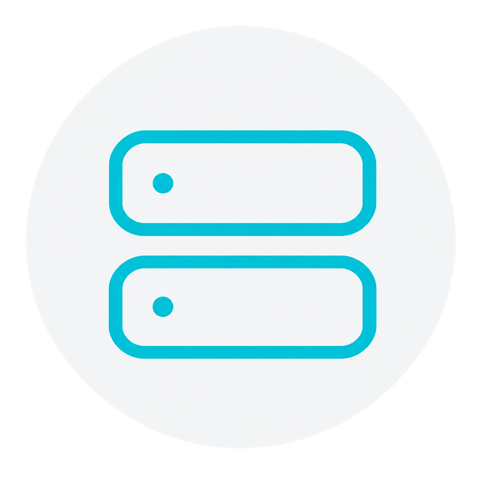
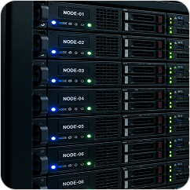
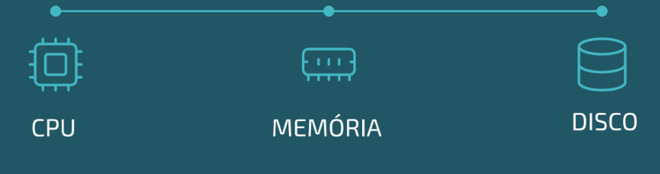

Acompanhe o estado dos recursos computacionais, identifique comportamentos críticos e obtenha uma visão clara da sua infraestrutura de alta performance
SOBRE O PROJETO
__

Ambientes HPC reúnem diversos recursos computacionais trabalhando simultaneamente. Essa complexidade torna essencial compreender como cada componente está organizado e como eles se relacionam.
A solução desenvolvida pela NAUTILUS visa tornar essa infraestrutura mais clara, conectando a visão do ambiente aos clusters, nodes e seus recursos computacionais.

Visão geral da infraestrutura


Agrupamento de recursos

Máquinas que executam os processos

CPU, memória, disco e rede em cada node.
A plataforma de monitoramento HPC acompanha continuamente os recursos dos nodes e centraliza as informações coletadas em uma única plataforma. Quando uma condição exige atenção, a equipe consegue identificar o componente afetado e obter o contexto necessário para analisar a situação.


Coleta de dados em tempo real de cada node do ambiente.
Centraliza e organiza os dados coletados de todo ambiente HPC.
Coleta contínua
Armazenamento seguro
Disponibilização estruturada
Ambiente HPC monitorado com alta disponibilidade.

Os principais recursos são monitorados continuamente para garantir performance, estabilidade e segurança.
Fale com a NAUTILUS descubra como nossa
solução pode trazer mais visibilidade,
agilidade e segurança para a sua
infraestrutura
Nossa equipe está pronta para entender as necessidades do seu ambiente
Retornamos o mais rápido possível com as informações que você precisa
Soluções
Nossa equipe está pronta para
conversar sobre seu HPC.